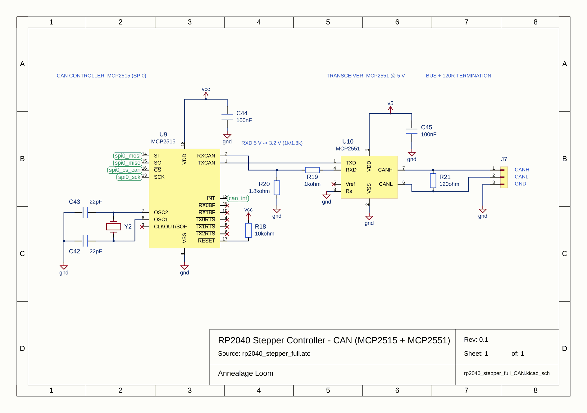

CAN, sheet 5 of 6



The project goes back to how it was before Agent turn 4, as a new commit by you, so nothing is lost and you can restore past this too.
This undoes 2 commits:
Which model each kind of work uses.
Changes apply to the next session.
10:40:52 session started 10:41:03 turn 1 end_turn